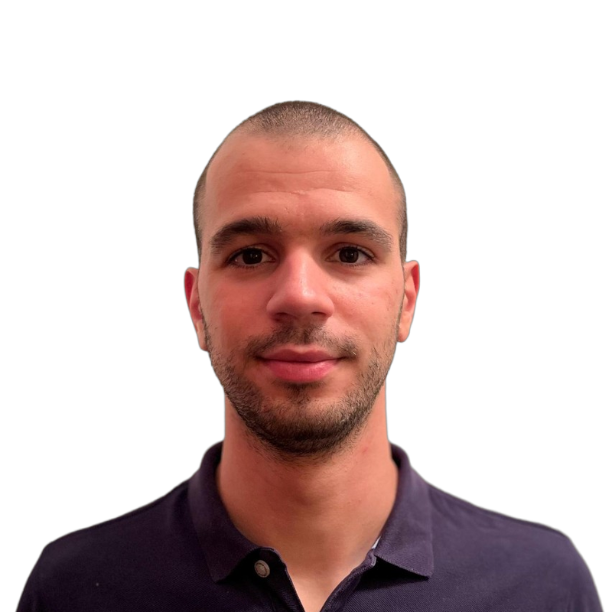

Ricardo Margarido

Summary
Passionate software developer with experience designing and developing robust applications. I thrive in collaborative, agile environments and I am committed to continuous learning andstaying updated with technology trends. Excited about creating innovative solutions and contributing to impactful projects.
Education
- Bachelor in Electrical and Computer Engineering (GPA:14/20) - NOVA School of Science and Technology
- Relevant Courses:
- Real Time Systems (GPA:16/20)
- Microprocessor Programming (GPA:15/20)
- Algorithms and Data Structures (GPA:15/20)
- Numerical Analysis (GPA:16/20)
- Master in Electrical and Computer Engineering (GPA:17/20) - NOVA School of Science and Technology
- Relevant Courses:
- Inteligent Sensorial Processing (GPA:20/20)
- Sensorial Systems (GPA:19/20)
- Data Acquisition Systems (GPA:17/20)
- Medical Information Systems (GPA:17/20)
Work Experience
- Software Developer Consultant - VTXRM - Software Factory
- Mar 2022 - Present
- Implement and maintain the backend core of the company's main software (Accipiens - Financial ERPS) using SQL Server, .Net Framework \ CORE (C#, VisualStudio) and WebServices;
- Mantained and developed an internal tool to generate C# code to fasten processes;
- Conduct unit testing and integration testing, executing the necessary bug fixing.
- Continuous Maintenance Technician - Renova SA
- Jan 2022 - Mar 2022
- Maintenance of all the company's industrial papermaking machines electrical components;
- Programmed Siemens' PLCs to control the machines.
- IT Support Team Intern - Renova SA
- Jun 2019 - Aug 2019
- Ensure the well functioning conditions of all computerdevices both in hardware and software.
- IT Team Intern - Hanon Systems, S.A.
- Jan 2019 - Feb 2019
- IT support and network problem solving;
- Developed the electrical system to the sound system ofthe cafeteria
Technical Skills
- Programming Languages (C#, Python)
- Backend Development (.NET)
- Database Management (MS SQL Server)
Soft Skills
- Decision Making
- Fast Learning
- Communication
- Attention to detail
Awards and Certifications
Other